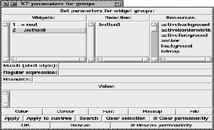

This procedure calls the dialog box for parameter setting for groups of widgets. Very often, parameters (like foreground) have to be set for a great number of widgets. Instead of calling the parameter setting dialog for each widget separately, this dialog allows the interactive selection of widgets, and the setting of parameters for these widgets.

Figure: The procedure XFProcConfParametersGroups
The upper left list contains all widgets in the application. A widget is added to the selection by clicking on its name. A selected widget is displayed in the middle list, where it can be removed with a click. The right list shows a list of resources. A resource name can be selected by clicking on the name.
Below the lists, two lines allow the selection of widgets via shell style expressions, or regular expressions. The next entry contains the resource name. The name can be entered by clicking on a list item in the upper right list, or by typing it by hand. The text widget at the bottom contains the value for the resource.
A number of buttons at the bottom provides access to some dialog boxes, where values for standard resources (like colors) can be interactively selected. The remaining buttons at the bottom are used to set the resources for the selected widgets (or for all descendants of the selected widgets), to clear the selection etc..